A tymczasem w Cameracie...
.
2012-04-28
szykujemy się do wyjazdu czyli znowu pakowanie walizki :(Piękna pogoda, słońce, chce się śpiewać. Pakujemy rzeczy do autokaru i wsiadamy.
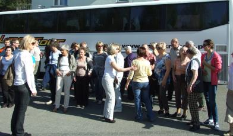
Przed nami długa droga.
Zatrzymujemy się na malutki odpoczynek na parkingu. Jest cudnie, robimy zdjęcia, żartujemy.
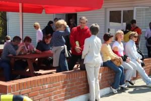 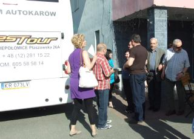
Ruszamy dalej. Następny postój to „popas” czyli obiad, ale już w Kownie na Litwie.
Jest wesoło, więc czas szybko płynie. Już jesteśmy na miejscu. O! jak tu ładnie.
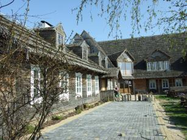 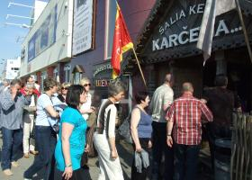
Obiad był super. Chwila odpoczynku i ruszamy w trasę.
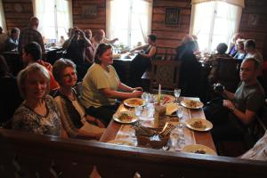
Jedziemy na nocleg do Rygi.
Przyjechaliśmy do Rygi zmęczeni, ale idziemy na wieczorny spacer , gdyż chęć zwiedzania jest silniejsza niż zmęczenie.
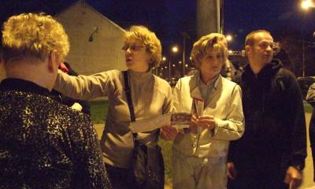
Wracamy do hotelu a tu niespodzianka…. gitara i śpiew,
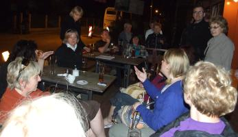 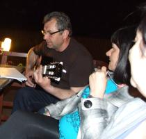 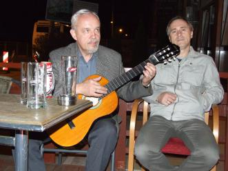
więc bez namysłu dołączamy do grupy i kolejna niespodzianka…. pani dyrygent ujawniła nową umiejętność… Ona gra na gitarze i to jak !!!
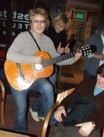
Mogliśmy tak słuchać i śpiewać do rana, ale padło zdanie... No kochani pora spać, bo jutro ciężki i dłuuugi dzień.

© Stowarzyszenie Muzyczne Chór Camerata Wieliczka